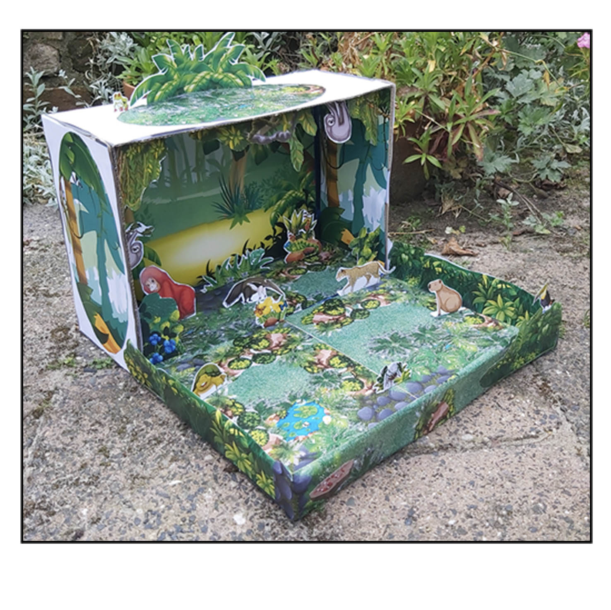
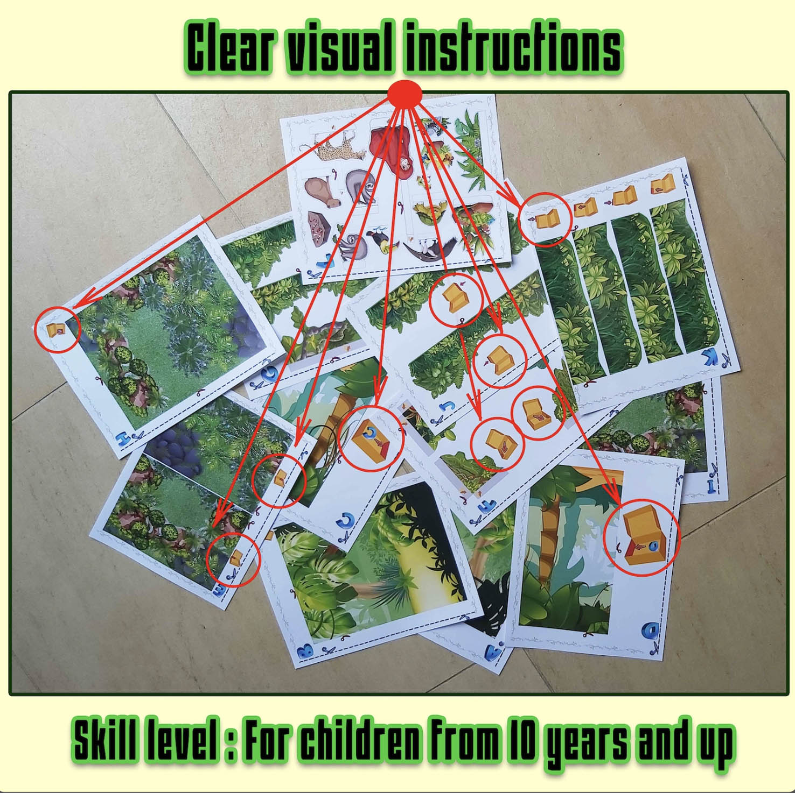

Maqueta de selva tropical 3D para niños
Convierte una caja de zapatos en una selva tropical llena de animales, plantas y vegetación. Imprime las páginas, recorta las piezas y construye un escenario 3D con diferentes capas y profundidad.
Una actividad creativa para proyectos escolares sobre la selva tropical, los hábitats, los animales y los ecosistemas.
Ver proyecto
Una maqueta de selva lista para construir
Imprime las piezas y crea una selva con profundidad dentro de una caja de zapatos. Los niños pueden colocar animales y vegetación mientras descubren cómo funciona un hábitat de selva tropical.





Aprende sobre la selva tropical mientras construyes
Construir una maqueta ayuda a visualizar cómo plantas, animales, agua y clima forman un ecosistema lleno de vida. La selva tropical contiene distintos espacios y niveles donde viven muchas especies.
Vegetación abundante
La humedad y las lluvias favorecen una vegetación muy densa. Árboles, lianas, helechos y otras plantas crean refugio y alimento para numerosos animales.
Animales de la selva
Tucanes, perezosos, grandes felinos, reptiles, anfibios e insectos son algunos de los animales asociados a las selvas tropicales. Cada especie ocupa su propio lugar dentro del hábitat.
Un ecosistema con capas
Desde el suelo hasta las copas de los árboles, la selva tiene diferentes niveles. La luz, la humedad y la vegetación cambian en cada zona y crean distintos lugares para vivir.
¿Qué incluye?
- Páginas a color listas para imprimir.
- Fondos de selva tropical para la caja.
- Animales tropicales, plantas y elementos de naturaleza para recortar.
- Piezas que pueden colocarse en diferentes posiciones para crear profundidad.
- Archivo digital PDF para imprimir en casa.
Ideal para
- Proyectos escolares sobre selvas tropicales, ecosistemas y hábitats.
- Actividades sobre animales y plantas de la selva.
- Manualidades de papel para niños.
- Aprender creando en casa o en clase.
- Familias que buscan una base sencilla para empezar un proyecto escolar.
¿Cómo se construye?
Solo necesitas una impresora, papel, tijeras, pegamento y una caja de zapatos o una caja de cartón similar.
¿Quieres construir tu propia maqueta de selva?
El proyecto es una descarga digital en PDF. Después de la compra podrás imprimir las páginas y empezar a construir.
La compra directa en Maquetas de Papel se añadirá próximamente.
Ver todas las maquetas